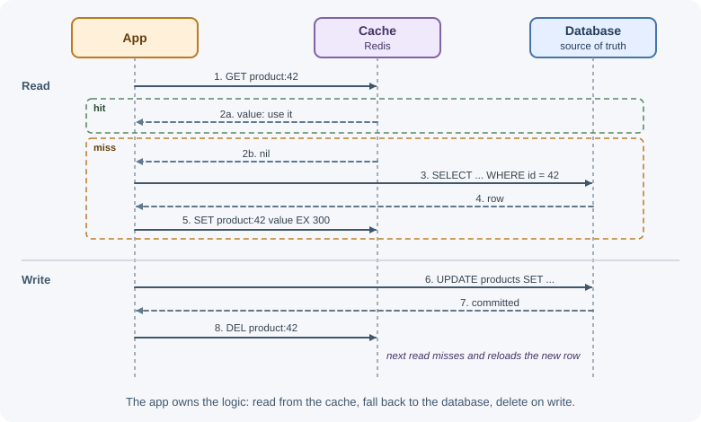
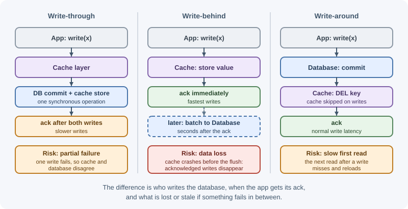
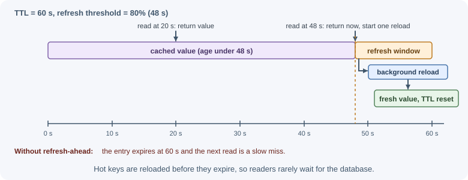

Caching Strategies¶
A caching strategy decides who reads from and writes to the cache, and when the cache and the source of truth are updated. The common patterns are cache-aside, read-through, write-through, write-behind, write-around, and refresh-ahead. Each trades off freshness, write latency, complexity, and what happens when something fails.
Why it matters¶
The same cache server can be used safely or dangerously depending on the strategy around it. One strategy keeps the database authoritative and tolerates cache loss; another makes the cache the first place writes land and risks losing data if it crashes. Knowing the patterns by name also helps in design discussions and interviews, where "we'll add a cache" is never a complete answer.
Real-world usage¶
- Amazon: inline versus side caches. The Amazon Builders' Library article Caching challenges and strategies separates inline caches (read-through/write-through, with cache management embedded in the data access path, such as DynamoDB Accelerator or an HTTP cache) from side caches (generic stores such as ElastiCache for Redis or Memcached, where application code manages the cache, which is cache-aside).
- Facebook: delete on write. In the Scaling Memcache at Facebook paper, web servers read through memcache as a demand-filled look-aside (cache-aside) cache. On a write they update the database and then send a delete to memcache, and the paper explains: "We choose to delete cached data instead of updating it because deletes are idempotent."
- Amazon ElastiCache guidance. The ElastiCache caching strategies guide presents lazy loading (cache-aside), write-through, and adding a TTL as the core strategies for populating and maintaining a cache.
How it works¶
Cache-aside (lazy loading)¶
The application talks to both the cache and the database. On a read, it checks the cache first; on a miss, it loads from the database and stores the result. On a write, it updates the database and removes (or updates) the cached entry.

- Only data that is actually requested gets cached.
- If the cache is down, reads fall back to the database.
- The first read after a miss or expiry is slow.
- The application code owns the caching logic.
Cache-aside is the most common pattern and a good default.
Read-through¶
The application asks only the cache (or a caching library). On a miss, the cache layer itself calls a loader to fetch from the database, stores the value, and returns it.
app ── get(key) ──> cache layer ── miss ──> loader ──> database
└── stores and returns the value
The behavior is like cache-aside, but loading logic is centralized in one component instead of repeated in every caller. Many in-process libraries and some managed caches support this with a "loader" function.
Write-through¶
Every write goes to the cache and the database synchronously as part of the same operation (usually through a cache layer that writes to the database). The write succeeds only after both are updated.
app ── write ──> cache layer ──> database (commit)
└──> cache (store new value)
- Cached data is fresh right after a write.
- Writes are slower: they pay for both stores.
- Data that is written but never read still occupies the cache (combine with a TTL).
- If the database write succeeds and the cache write fails (or the reverse), the two disagree unless failures are handled carefully.
Write-behind (write-back)¶
Writes go to the cache only and are acknowledged immediately. The cache layer flushes changes to the database later, often in batches.
app ── write ──> cache ── ack (fast)
└── queue ── batch ──> database (seconds later)
- Very fast writes and fewer database operations (several updates to the same key can be merged).
- Risk of data loss: if the cache crashes before flushing, acknowledged writes disappear unless the cache is durable.
- The database is temporarily behind, so other systems reading it see old data.
Use it only where losing a few recent writes is acceptable (counters, view statistics, analytics) or where the cache layer provides durability.
Write-around¶
Writes go directly to the database and skip the cache; the cached entry is invalidated. The cache is filled only by reads (as in cache-aside).
- Avoids filling the cache with data written once and rarely read (logs, bulk imports).
- The first read after a write is a miss.
In practice, "cache-aside with delete-on-write" is a write-around approach.
The three write strategies side by side:

Refresh-ahead¶
Before a popular entry expires, the system reloads it in the background, so readers rarely see a miss.

- Keeps latency low for hot keys.
- Wasted work if the refreshed entry is not read again.
- Needs care so only one refresh runs at a time (see cache failure modes).
Trade-offs at a glance¶
| Strategy | Who loads/writes the cache | Read freshness | Write latency | If the cache fails | Main risk |
|---|---|---|---|---|---|
| Cache-aside | Application | Stale until TTL or invalidation | Unchanged (DB + delete) | Reads hit the DB | Stale data after races; first-read latency |
| Read-through | Cache layer (loader) | Same as cache-aside | Unchanged | Depends on the layer; often reads fail over | Coupling to a cache library |
| Write-through | Cache layer on every write | Fresh after writes | Higher (two writes) | Writes may fail or diverge | Partial failures; caching unread data |
| Write-behind | Cache first, DB later | Fresh in cache; DB lags | Lowest | Unflushed writes lost | Data loss, DB temporarily behind |
| Write-around | DB only; cache filled by reads | Fresh after the next miss | Unchanged | Reads hit the DB | Misses right after writes |
| Refresh-ahead | Background refresher | Usually fresh for hot keys | Unchanged | Falls back to normal misses | Extra load from refreshing cold keys |
How to choose¶
- Start with cache-aside plus a TTL and delete-on-write. It is simple, keeps the database authoritative, and survives cache outages.
- Use read-through when you want loading logic in one shared layer.
- Use write-through when data must be fresh immediately after a write and the extra write latency is acceptable.
- Use write-behind only for data where occasional loss is tolerable, or when the cache is durable and replicated.
- Use write-around for write-heavy data that is rarely read back.
- Add refresh-ahead for a small set of very hot keys whose misses are expensive.
Strategies combine: reads with cache-aside, writes with write-around, and refresh-ahead for the homepage data.
When to use and when not to use¶
- Cache-aside: use as the default for read-heavy data with an authoritative database. Avoid relying on it alone when a stale read right after a write is unacceptable.
- Read-through: use when many callers load the same kinds of data and you want one loading path. Avoid it when it would tie your code to a cache product that may be unavailable.
- Write-through: use when reads right after writes must hit fresh, cached data (settings, profiles shown immediately after saving). Avoid it for data written often but rarely read.
- Write-behind: use only for loss-tolerant, high-frequency writes (counters, analytics) or with a durable cache layer. Never use it for orders, payments, or anything you must not lose.
- Write-around: use for bulk or write-once data. Avoid it when the next read after a write is time-critical.
- Refresh-ahead: use for a handful of very hot, expensive keys. Avoid it for large or cold key sets.
| Need | Cache-aside | Read-through | Write-through | Write-behind |
|---|---|---|---|---|
| Simplest correct default | Best | Good | More work | Risky |
| Survives a cache outage | Yes (reads go to the DB) | Depends on the layer | Writes may fail | Unflushed writes lost |
| Fresh data right after a write | After the next miss | After the next miss | Yes | Yes (in the cache) |
| Write latency | Normal | Normal | Higher | Lowest |
| Data-loss risk | None | None | None | Yes |
Practical examples¶
The examples use the ioredis client (npm install ioredis); the
official redis package works the same way with slightly different
method signatures.
Cache-aside with delete-on-write¶
// productCache.js
import Redis from "ioredis";
import { db } from "./db.js";
const redis = new Redis(process.env.REDIS_URL);
const TTL_SECONDS = 300;
const key = (id) => `product:${id}:v1`;
export async function getProduct(id) {
// 1. Try the cache, but never let a cache error break the request
try {
const cached = await redis.get(key(id));
if (cached !== null) return JSON.parse(cached);
} catch (error) {
console.warn("cache read failed", error.message);
}
// 2. Miss: load from the source of truth
const product = await db.products.findById(id);
if (!product) return null;
// 3. Populate with a TTL; failures here are also non-fatal
redis.set(key(id), JSON.stringify(product), "EX", TTL_SECONDS)
.catch((error) => console.warn("cache write failed", error.message));
return product;
}
export async function updateProduct(id, changes) {
const product = await db.products.update(id, changes); // 1. write the DB first
await redis.del(key(id)); // 2. then invalidate
return product;
}
Deleting rather than writing the new value avoids out-of-order updates when two writers race; the next read loads the latest committed row. The remaining race conditions are covered in invalidation and expiration.
A read-through helper¶
// readThrough.js: callers provide a loader; the helper owns cache logic
export function createReadThroughCache(redis, { ttlSeconds, prefix }) {
return async function get(id, loader) {
const cacheKey = `${prefix}:${id}`;
const cached = await redis.get(cacheKey);
if (cached !== null) return JSON.parse(cached);
const value = await loader(id);
if (value !== null) {
await redis.set(cacheKey, JSON.stringify(value), "EX", ttlSeconds);
}
return value;
};
}
const userCache = createReadThroughCache(redis, { ttlSeconds: 600, prefix: "user:v1" });
const user = await userCache(42, (id) => db.users.findById(id));
Write-through¶
export async function saveSettings(userId, settings) {
// Commit to the database first; it is the source of truth
const saved = await db.settings.upsert(userId, settings);
// Then store the committed value; a TTL limits damage if this step fails
await redis.set(`settings:${userId}`, JSON.stringify(saved), "EX", 3600);
return saved;
}
Writing the database first means a crash between the two steps leaves the cache stale (bounded by the TTL) rather than leaving the cache holding data that was never saved.
Write-behind for view counters¶
// Fast path: increment in Redis only
export async function recordView(articleId) {
await redis.hincrby("views:pending", articleId, 1);
}
// Background job every 10 seconds: flush to the database in one batch
export async function flushViews() {
// RENAME takes the pending hash atomically so new views go to a fresh one
const exists = await redis.exists("views:pending");
if (!exists) return;
await redis.rename("views:pending", "views:flushing");
const counts = await redis.hgetall("views:flushing");
for (const [articleId, count] of Object.entries(counts)) {
await db.articles.incrementViews(articleId, Number(count));
}
await redis.del("views:flushing");
}
If Redis restarts before a flush, those counts are lost, which is usually
acceptable for view statistics but never for orders or payments. A
production version would also run only one flusher at a time and handle a
crash between RENAME and DEL.
Best practices¶
- Default to cache-aside with TTLs and delete-on-write.
- Write to the database before touching the cache.
- Prefer deleting cached entries to overwriting them on writes.
- Treat cache errors as misses, not request failures, with short timeouts on cache calls.
- Reserve write-behind for loss-tolerant data, and document that choice.
- Keep caching logic in one module or helper rather than scattered across handlers.
- Measure hit ratio and latency per strategy and adjust TTLs from data.
In production¶
- Every request fails during a Redis failover.
Detect: the API error rate spikes in step with Redis connection errors
(
ECONNREFUSED, timeouts) in logs. Cause: cache calls are not wrapped, so a cache error fails the request. Fix: treat cache errors as misses, set short cache timeouts, and cap the resulting database fallbacks. - Values appear that were never saved. Detect: the cache holds a value with no matching database row, usually after database errors or rollbacks. Cause: the cache was updated before the database write, and the write then failed. Fix: write the database first, then delete (or set) the cache entry.
- View counts drop after a Redis restart. Detect: totals in the database lag the numbers users saw, with a gap matching the restart time. Cause: write-behind data not yet flushed when Redis lost it. Fix: accept and document the loss for counters, or enable persistence and flush more often; never use write-behind for critical data.
- Write-through cache and database disagree. Detect: periodic comparisons find cached values different from the database. Cause: one of the two writes failed, or concurrent writers interleaved. Fix: give cached entries a TTL, prefer deleting over setting, and log and alert on cache write failures.
- Refresh-ahead load with no benefit. Detect: background refresh jobs account for a large share of database queries, while many refreshed keys are never read before their next refresh. Cause: refreshing cold keys. Fix: refresh only keys with recent reads, or switch them back to plain TTL expiry.
Important terminology¶
- Cache-aside (lazy loading): The application loads misses from the source and stores them in the cache.
- Read-through: The cache layer loads misses itself through a loader.
- Write-through: Writes update the cache and the source synchronously.
- Write-behind (write-back): Writes update the cache and reach the source asynchronously later.
- Write-around: Writes go to the source only; the cache is filled by reads.
- Refresh-ahead: Hot entries are reloaded before they expire.
- Source of truth: The system whose data is authoritative, usually the database.
Common mistakes and misconceptions¶
- Updating the cache before the database, so a failed database write leaves fake data in the cache.
- Using write-behind for important data without durability.
- Assuming write-through guarantees consistency; partial failures and concurrent writers can still cause divergence.
- Letting a cache outage fail every request instead of falling back.
- Caching with no TTL because "we invalidate on write"; one missed invalidation then lasts forever.
- Refreshing every key ahead of time, wasting resources on cold data.
Revision questions¶
- Describe the read and write paths of cache-aside.
- How does read-through differ from cache-aside?
- What are the risks of write-behind, and which data suits it?
- Why is deleting a cached entry on write often safer than updating it?
- When does write-around make sense?
- Which strategy would you choose for a product catalog, and why?